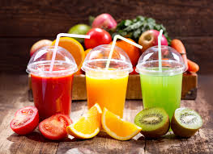
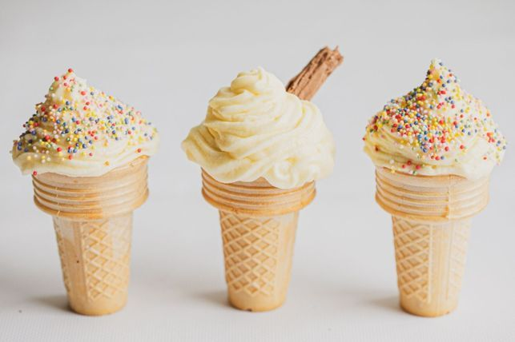
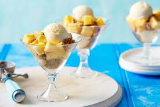

nos services
Ice Cream Space
Glaces Salvators chez Delightful Scoops Glaces Salvators par Delightful Scoops offrent une expérience gustative inégalée grâce à des créations artisanales de haute qualité. Chaque glace est soigneusement élaborée à partir des meilleurs ingrédients, alliant tradition et innovation pour un plaisir exceptionnel. Avec une variété de saveurs audacieuses et une texture crémeuse, les glaces Salvators sont conçues pour ravir vos papilles et transformer chaque instant en une fête des saveurs. Découvrez l’excellence et l’originalité à chaque cuillerée de notre marque signature.
Jus Space
Jus Salvators par Delightful Scoops offre une expérience rafraîchissante et naturelle à chaque gorgée. Élaborés à partir de fruits frais et de haute qualité, nos jus capturen t la pureté et la richesse des saveurs naturelles. Chaque b outeille de Jus Salvators est un mélange parfait de goût et de santé, offrant une alternative délicieuse et nourrissante pour tous les âges. Découvrez le plaisir authentique et revitalisant de nos jus, idéals pour compléter vos moments de détente et de plaisir.

Kids Space
Salvators Kids par Delightful Scoops est notre spécialité spécialement conçue pour les plus jeunes. Alliant des saveurs douces et amusantes à des ingrédients de haute qualité, chaque portion est une aventure gustative qui ravira les enfants. Avec des combinaisons créatives et des couleurs vibrantes, Salvators Kids transforme chaque moment en une expérience joyeuse et mémorable. Nos jus pour enfants, également sous la marque Salvators, sont élaborés avec des fruits frais et naturels, offrant une alternative saine et délicieuse qui accompagne parfaitement nos glaces.

Salvators Cream
Salvators par Delightful Scoops est notre spécialité incontournable, alliant des ingrédients locaux raffinés à des inspirations globales. Chaque création de Salvators est conçue pour offrir une explosion de saveurs uniques, combinant des éléments classiques et des touches audacieuses pour une expérience gustative inoubliable. Découvrez le summum de la créativité et du savoir-faire dans chaque cuillerée de notre marque signature.

À propos de Nous
Spécialité Glasse
Nous sommes fiers d'être la destination numéro un en Tunisie pour une glace exceptionnelle. Notre engagement envers la qualité et l'innovation garantit que chaque cuillerée est une expérience délicieuse. Nous fabriquons notre glace en utilisant uniquement les meilleurs ingrédients, issus de sources locales et inspirés du monde entier, pour offrir un goût unique et inoubliable. Notre menu diversifié propose un mélange de saveurs classiques et de nouvelles combinaisons audacieuses, toutes créées avec une attention méticuleuse aux détails. Que vous recherchiez le confort nostalgique de la vanille et du chocolat ou l'attrait excitant des fruits et épices exotiques, Delightful Scoops offre quelque chose pour satisfaire tous les palais.
Contact info

Phone
+216 99 337 040
+216 28 699 515

jbelimouadh5@gmail.com